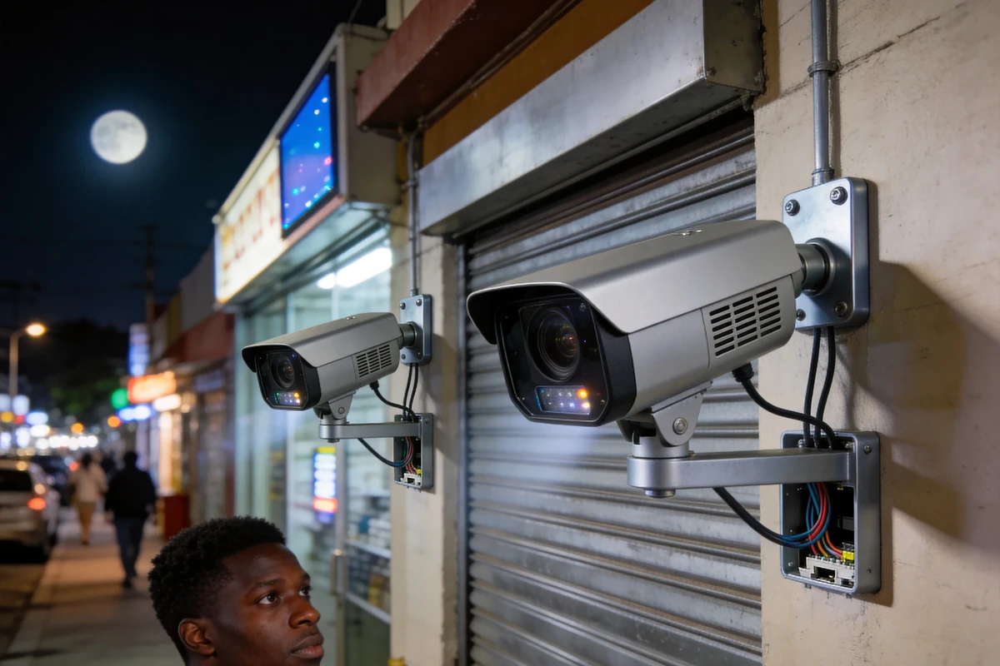
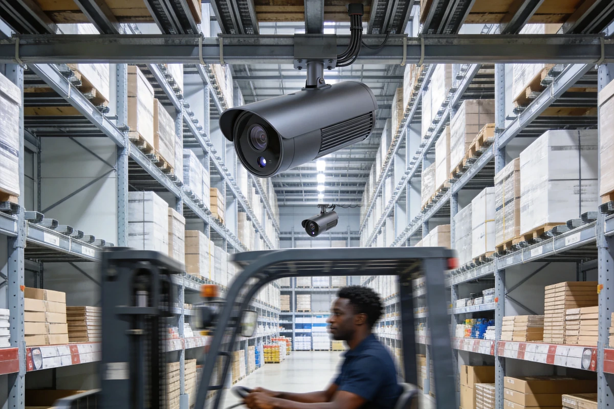
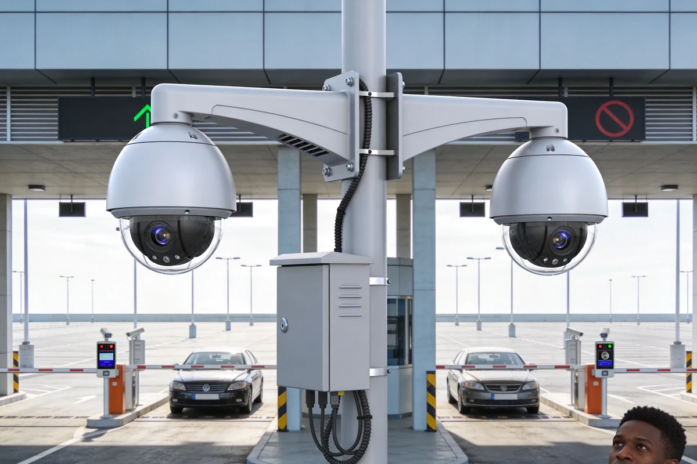
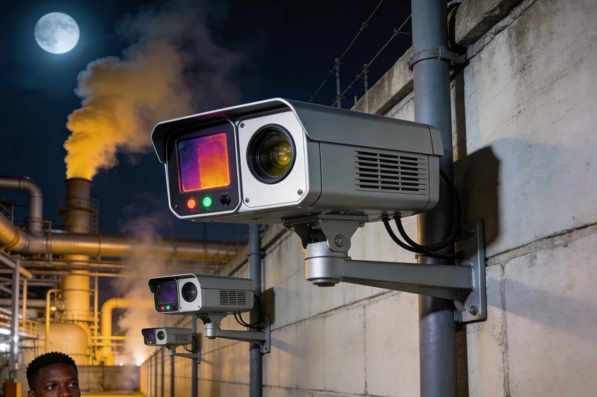
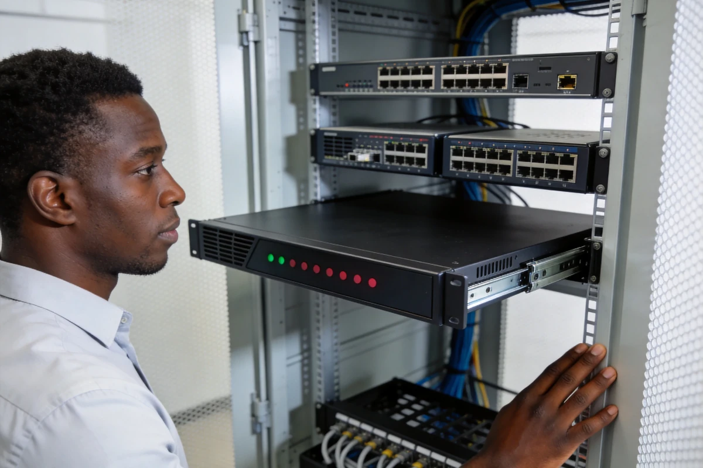
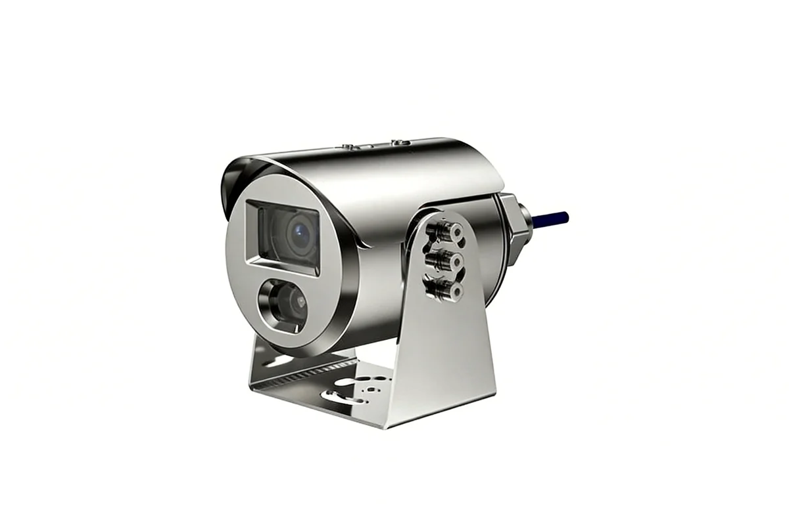
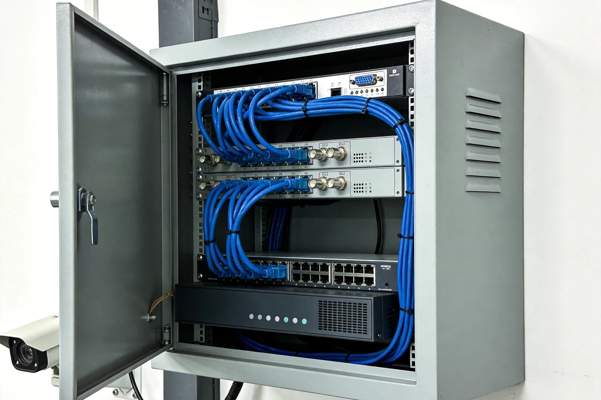

AXLTeco 提供从高清网络摄像机、网络录像机（NVR）到视频管理平台的完整视频监控系统，覆盖前端采集、智能分析、存储回放与集中管理全链路，适用于建筑工地、办公楼宇、交通枢纽、工业园区等场景的安防需求。 设备体系对标海康、大华两大主流品牌的产品谱系，覆盖前端采集到后端存储的主要形态。
全彩高清采集
200万至800万像素，H.265+编码，低照度全彩成像，宽动态范围高达120dB。
AI 智能分析
人脸识别、行为分析、越界检测、人流统计，深度学习算法精准过滤误报。
灵活存储方案
4至128路NVR可选，支持RAID阵列与智能检索，H.265+节省高达75%存储空间。
远程移动管控
手机APP实时预览与回放，告警即时推送，随时随地掌握现场动态。
严苛环境适应
IP67防护等级，防腐蚀涂层设计，-30°C至+60°C宽温运行，户外恶劣环境无忧。
弹性扩展部署
从单栋建筑到城市级网络分阶段扩展，ONVIF/GB/T 28181协议兼容主流品牌。
型号选型
视频监控设备按前端摄像与后端存储两类用途组织，各类别对应不同的监控场景与安装条件。

经济型网络摄像机
- 点位密集、单价敏感的定点覆盖
- 按监控距离与补光条件选型，以枪机、筒机与半球基础形态为主

场景增强型网络摄像机
- 大范围周界、机内智能分析与按图施工的项目部署
- 依现场光照与场景复杂度，选择护罩一体机、海螺或全景形态

球机与云台摄像机
- 需变焦与转动的远距离监控
- 按安装高度与监控半径确定球机尺寸档，超远距用重载云台

特种与热成像摄像机
- 危险区域、温度异常与夜间观测
- 按防爆等级与测温需求选型，壳体型式随介质腐蚀性确定

网络硬盘录像机（NVR）
- 前端视频汇聚、本地录像与回放
- 按路数与留存天数确定盘位档

视频存储服务器
- 多级联网与中心机房集中存储
- 按容量与带宽确定阵列规模，中心节点做冗余

模拟与编码设备（存量改造）
- 既有模拟系统的存量改造，不作为新建推荐
- 编码器与混合录像机并存，保留原有同轴链路
接口与兼容
视频监控设备支持丰富的物理接口与网络协议，兼容主流平台与第三方系统。
物理接口
- RJ45 10/100M 自适应以太网口
- RS-485 / RS-232 串行接口
- 音频输入/输出（RCA）
- 报警输入/输出（开关量）
- microSD 卡槽（最高 512 GB）
- HDMI / VGA 视频输出（NVR）
- USB 2.0 / 3.0 接口
网络协议
- TCP/IP, IPv4/IPv6, HTTP/HTTPS
- ONVIF（Profile S/G/T）
- RTSP, RTP, RTCP
- GB/T 28181 国标协议
- ISAPI, SDK
- SMTP, FTP, NTP, DDNS
- SNMP, UPnP, PPPoE
兼容平台
- Hik-Connect 手机APP
- iVMS-4200 客户端
- Hik-Central 综合平台
- DSS Ultimate
- DSS Professional
- DSS OneBox
- DSS Express
- DSS7116D / DSS7116DR
- DMSS
- 第三方 VMS 平台（ONVIF）
- 主流浏览器免插件预览
第三方兼容
- 兼容海康、大华等主流品牌 IPC
- 支持第三方 ONVIF 摄像机接入
- SDK 二次开发接口
- ISAPI 开放接口
应用方案
视频监控设备可与AXLTeco软件系统与行业解决方案深度集成，发挥协同价值。
优势与保障
全场景覆盖
提供枪机、球机、半球、全景、热成像等多形态设备，满足室内外、昼夜、高低温全场景监控需求。
AI 智能分析
内置人脸识别、行为分析、越界检测、车牌识别等 AI 算法，从\"看得见\"到\"看得懂\"。
恶劣环境适配
IP67 防护等级，耐高低温、防盐雾、防雷击，适配非洲高温、高湿、多尘环境。
统一平台管理
支持接入 iVMS-4200 客户端与 AXLTeco 综合管理平台，多点位集中管控，运维高效。
高清成像
4K 超高清分辨率，低照度、宽动态、强光抑制技术，复杂光线环境下成像清晰。
协议开放兼容
支持 ONVIF、GB/T 28181、RTSP 等标准协议，与第三方平台无缝对接，保护既有投资。
现场勘察
实地勘察监控点位、视野范围与光线条件，输出点位布设与设备选型方案。
安装调试
专业工程师团队完成设备安装、线路敷设、平台接入与图像调优。
培训交付
培训安保人员与系统管理员，覆盖实时监控、录像回放、告警处理与日常维护。
质保承诺
设备质保一年，核心部件延保可选，质保期内免费维修或更换。
本地响应
在尼日利亚等地设有本地服务团队，提供技术支持、备件供应与现场维护服务。
远程运维
7×24 小时远程技术支持，设备在线状态实时监控，故障主动预警。